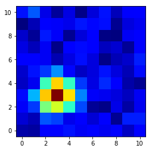
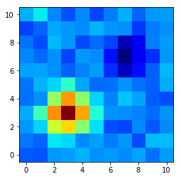

In [3]:
%matplotlib inline
import matplotlib.pyplot as plt
In [6]:
import numpy as np
In [11]:
from oktopus.models import SymmetricGaussian2D
In [37]:
y, x = np.indices((11, 11))
In [29]:
g1 = SymmetricGaussian2D(y, x)
g2 = SymmetricGaussian2D(y, x)
In [85]:
data = g1(10, 3, 3, 1) + np.random.normal(size=x.shape, scale=0.5)
In [86]:
plt.imshow(data, origin='lower', cmap='jet')
Out[86]:
<matplotlib.image.AxesImage at 0x1187ba9b0>

In [87]:
xc = np.sum(x * data) / np.sum(data)
xc
Out[87]:
2.9427731660153067
In [88]:
yc = np.sum(y * data) / np.sum(data)
yc
Out[88]:
2.9286542044179806
No problem, so far! Let’s add a negative component to the data and see how that affect the centroid
In [89]:
data_ = data + g1(-3, 7, 7, 1)
In [90]:
plt.imshow(data_, origin='lower', cmap='jet')
Out[90]:
<matplotlib.image.AxesImage at 0x1189316a0>

In [91]:
xc = np.sum(x * data_) / np.sum(data_)
xc
Out[91]:
1.1250961019734065
In [92]:
yc = np.sum(y * data_) / np.sum(data)
yc
Out[92]:
0.76284372335915118
As we can see… s#@1t has happened
Now, let’s automagically compensate that negative value:
In [93]:
data_min = np.min(data_)
In [94]:
data_comp = data_ + abs(data_min)
In [95]:
(data_comp < 0).sum()
Out[95]:
0
Let’s mask the negative data:
In [96]:
np.sum(x[data_ > 0] * data_[data_ > 0]) / np.sum(data_[data_ > 0])
Out[96]:
3.4361279753762317
In [98]:
np.sum(y[data_ > 0] * data_[data_ > 0]) / np.sum(data_[data_ > 0])
Out[98]:
3.492001313193946
Not that bad!
Ok, now, let’s tests our maths:
In [97]:
xc_prime = np.sum(x * data_comp) / np.sum(data_comp)
In [71]:
xc_prime
Out[71]:
4.5988053774752364
In [76]:
n_pixels = data.shape[0] * data.shape[1]
In [77]:
c = abs(data_min)
In [100]:
xc_corrected = ((np.sum(data_) + n_pixels * c) * xc_prime - c * np.sum(x))/np.sum(data_)
xc_corrected
Out[100]:
1.4725841866096201
In [ ]: